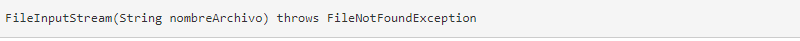

Byte Streams y Character Streams
Las versiones modernas de Java definen dos tipos de flujos de E/S: byte y carácter. (La versión original de Java definió solo el stream de bytes, pero los streams de caracteres se agregaron rápidamente).
Los streams de bytes proporcionan un medio conveniente para manejar la entrada y salida de bytes. Se usan, por ejemplo, al leer o escribir datos binarios. Son especialmente útiles cuando se trabaja con archivos.
Los streams de caracteres están diseñadas para manejar la entrada y salida de caracteres. Usan Unicode y, por lo tanto, pueden ser internacionalizados. Además, en algunos casos, los streams de caracteres son más eficientes que las secuencias de bytes.
El hecho de que Java defina dos tipos diferentes de flujos hace que el sistema de E/S sea bastante grande porque se necesitan dos conjuntos separados de jerarquías de clase (una para bytes y otra para caracteres). El gran número de clases de E/S puede hacer que el sistema de E/S sea más intimidante de lo que realmente es. Recuerde que, en su mayor parte, la funcionalidad de los streams de bytes es paralela a la de los streams de caracteres.
Lectura de Entrada de Consola
Originalmente, la única forma de realizar una entrada por consola era usar streams de bytes, y gran parte del código de Java todavía utiliza streams de bytes exclusivamente. Ahora, puedes usar streams de bytes o caracteres. Para el código comercial, el método preferido para leer la entrada de la consola es usar un flujo orientado a caracteres. Hacerlo hace que tu programa sea más fácil de internacionalizar y más fácil de mantener. También es más conveniente operar directamente en caracteres en lugar de convertir hacia atrás y hacia adelante entre caracteres y bytes.
Escritura de Salida de Consola
Como en el caso de la entrada de la consola, Java originalmente solo proporcionaba streams de bytes para la salida de la consola. Java 1.1 agregó streams de caracteres. Para el código más portátil, se recomiendan streams de caracteres. Sin embargo, debido a que System.out es un stream de bytes, la salida de consola basada en bytes sigue siendo ampliamente utilizada. De hecho, todos los programas en este curso hasta este punto lo han usado! Por lo tanto, se examina aquí.
La salida de la consola se logra más fácilmente con print() y println(), con los cuales ya está familiarizado. Estos métodos están definidos por la clase PrintStream (que es el tipo de objeto al que hace referencia System.out). Aunque System.out es un stream de bytes, todavía es aceptable usar este stream para una salida de consola simple.
Lectura de Ficheros en Java
Un archivo se abre para la entrada creando un objeto FileInputStream. Aquí hay un constructor de uso común:

Aquí, nombreArchivo especifica el nombre del archivo que desea abrir. Si el archivo no existe, se lanza FileNotFoundException. FileNotFoundException es una subclase de IOException.
Para leer desde un archivo, puede usar read().
Cada vez que se invoca, read() lee un solo byte del archivo y lo devuelve como un valor entero. Devuelve -1 cuando se encuentra el final del archivo. Lanza una IOException cuando ocurre un error. Por lo tanto, esta versión de read() es la misma que se usa para leer desde la consola.
Cuando haya terminado con un archivo, debe cerrarlo llamando a close().